Comparing iNaturalist to Schiller maps
Contents
Comparing iNaturalist to Schiller maps#
The Schiller map also performs well in comparison to sPlotOpen. These maps were produced to verify the efficacy of using a machine learning approach to estimate plant traits from photographs (Schiller et al, 2021). How well to these two maps compare to sPlotOpen? Are there regional differences in how well the Wolf and Schiller map perform? How do the two maps compare?
Compare differences of Schiller and iNaturalist maps to sPlotOpen maps, respectively
Compare Schiller and iNaturalist maps
# packages
import os
import pandas as pd
import numpy as np
# plotting
import matplotlib.pyplot as plt
import seaborn as sns
# for calculating grid areas
from pyproj import Proj # allows for different projections
from shapely.geometry import shape # for calculating areas
import matplotlib.ticker as ticker
from matplotlib.colors import LogNorm, Normalize
from matplotlib.ticker import MaxNLocator
import cartopy.crs as ccrs
import cartopy.feature as cfeature
from matplotlib.colors import BoundaryNorm
import xarray as xr
import rasterio
from os import listdir
from os.path import isfile, join
path = "published_maps/2deg/"
files = [f for f in listdir(path) if isfile(join(path, f))]
files.sort()
files
['other_nit_2deg.tif', 'other_nita_2deg.tif', 'other_sla_2deg.tif']
def cubeFile(file):
name = file.replace(".tif","")
sr = xr.open_dataset(path + file,engine = "rasterio",chunks = 1024)
sr = sr.assign_coords({"variable":name})
return sr
da = xr.concat([cubeFile(x) for x in files],dim = "variable")
da
<xarray.Dataset>
Dimensions: (band: 6, x: 180, y: 90, variable: 3)
Coordinates:
* band (band) int64 1 2 3 4 5 6
* x (x) float64 -179.0 -177.0 -175.0 -173.0 ... 175.0 177.0 179.0
* y (y) float64 89.0 87.0 85.0 83.0 ... -83.0 -85.0 -87.0 -89.0
spatial_ref int64 0
* variable (variable) <U15 'other_nit_2deg' ... 'other_sla_2deg'
Data variables:
band_data (variable, band, y, x) float32 dask.array<chunksize=(1, 6, 90, 180), meta=np.ndarray>def plot_grid(df, lon, lat, variable, dataset_name, deg, log=True):
plt.rcParams.update({'font.size': 15})
# define raster shape for plotting
step = int((360/deg) + 1)
bins_x = np.linspace(-180,180,step)
bins_y= np.linspace(-90,90,int(((step - 1)/2)+1))
df['x_bin'] = pd.cut(df[lon], bins=bins_x)
df['y_bin'] = pd.cut(df[lat], bins=bins_y)
df['x_bin'] = df['x_bin'].apply(lambda x: x.left)
df['y_bin'] = df['y_bin'].apply(lambda x: x.left)
grouped_df = df.groupby(['x_bin', 'y_bin'], as_index=False)[variable].max()
raster = grouped_df.pivot('y_bin', 'x_bin', variable)
# data format
data_crs = ccrs.PlateCarree()
#for colorbar
levels = MaxNLocator(nbins=15).tick_values(grouped_df[variable].min(), grouped_df[variable].max())
cmap = plt.get_cmap('PiYG') # colormap
norm = BoundaryNorm(levels, ncolors=cmap.N, clip=True)
im_ratio = raster.shape[0]/raster.shape[1] # for size of colorbar
#create base plot of a world map
ax = fig.add_subplot(1, 1, 1, projection=ccrs.Robinson()) # I used the PlateCarree projection from cartopy
ax.set_global()
vmin=df[variable].min()
if abs(df[variable].max()) > abs(vmin):
vmin = df[variable].max()*-1
vmax = df[variable].max()
else:
vmax = df[variable].min()*-1
#add grid with values
im = ax.pcolormesh(bins_x, bins_y, raster, cmap=cmap,
vmin=vmin,
vmax=vmax,
#vmin=-1.5,
#vmax=1.5,
transform=data_crs)
#add color bar
if log==True:
label= "ln " + str(variable)
else:
label= str(variable)
fig.colorbar(im,fraction=0.046*im_ratio, pad=0.04, label=label)
#add coastlines
ax.coastlines(resolution='110m', color='pink', linewidth=1.5)
#set title
ax.set_title( variable + ' ' + dataset_name, size=14)
def plot_hist_overlay_3(df, variable1, variable2, variable3, trait):
v1 = df[variable1]
v2 = df[variable2]
v3 = df[variable3]
fig=plt.figure()
ax=fig.add_subplot(111, label="1")
ax2=fig.add_subplot(111, label="2", frame_on=False)
ax3=fig.add_subplot(111, label="2", frame_on=False)
ax.hist(v1, range=(v1.dropna().min(), v1.dropna().max()), bins=70, color="blue", alpha = 0.5)
ax.set_xlabel("Trait value", color="black")
ax.set_ylabel("Trait value frequency", color="black")
ax.tick_params(axis='x', colors="black")
ax.tick_params(axis='y', colors="black")
y_min, y_max = ax.get_ylim()
ax.set_ylim([y_min, y_max])
ax2.hist(v2, range=(v1.dropna().min(), v1.dropna().max()), bins=70, color="pink", alpha = 0.5)
#ax2.xaxis.tick_top()
#ax2.yaxis.tick_right()
#ax2.tick_params(axis='y', colors="C1")
#ax2.set_xlabel(variable2, color="C1")
#ax2.xaxis.set_label_position('top')
#ax2.tick_params(axis='x', colors="C1")
ax2.set_ylim([y_min, y_max])
ax3.hist(v3, range=(v1.dropna().min(), v1.dropna().max()), bins=70, color="black", alpha = 0.5)
ax3.set_ylim([y_min, y_max])
fig.legend(labels=["iNaturalist", "Schiller et al", "sPlotOpen"], loc='center left', bbox_to_anchor=(0.75, 0.5))
plt.title(label= trait + " distributions sPlotOpen/iNaturalist/Schiller", fontsize=14)
def lat_weights(lat_unique, deg):
from pyproj import Proj
from shapely.geometry import shape
# determine weights per grid cell based on longitude
# keep only one exemplary cell at each distance from equator
# weights per approximated area of grid size depending on distance from equator
# make dictionary
weights = dict()
for j in lat_unique:
# the four corner points of the grid cell
p1 = (0 , j+(deg/2))
p2 = (deg , j+(deg/2))
p3 = (deg, j-(deg/2))
p4 = (0, j-(deg/2))
# Calculate polygon surface area
# https://stackoverflow.com/questions/4681737/how-to-calculate-the-area-of-a-polygon-on-the-earths-surface-using-python
# Define corner points
co = {"type": "Polygon", "coordinates": [[p1,p2,p3,p4]]}
lat_1=p1[1]
lat_2=p3[1]
lat_0=(p1[1]+p3[1])/2
lon_0=deg/2
# Caveat: Connot go accross equator
value1 = abs(lat_1 + lat_2)
value2 = abs((lat_1) + abs(lat_2))
# if grid cell overlaps equator:
if value1 < value2:
lat_1=p1[1]
lat_2=0
lat_0=(p1[1]+lat_2)/2
lon_0=deg/2
# Projection equal area used: https://proj.org/operations/projections/aea.html
projection_string="+proj=aea +lat_1=" + str(lat_1) + " +lat_2=" + str(lat_2) + " +lat_0=" + str(lat_0) + " +lon_0=" + str(lon_0)
lon, lat = zip(*co['coordinates'][0])
pa = Proj(projection_string)
x, y = pa(lon, lat)
cop = {"type": "Polygon", "coordinates": [zip(x, y)]}
area = (shape(cop).area/1000000)*2
# if grid cell is on one side of equator:
else:
# Projection equal area used: https://proj.org/operations/projections/aea.html
projection_string="+proj=aea +lat_1=" + str(lat_1) + " +lat_2=" + str(lat_2) + " +lat_0=" + str(lat_0) + " +lon_0=" + str(lon_0)
lon, lat = zip(*co['coordinates'][0])
pa = Proj(projection_string)
x, y = pa(lon, lat)
cop = {"type": "Polygon", "coordinates": [zip(x, y)]}
area = (shape(cop).area/1000000)
# set coord to center of grid cell
coord = j
# map area to weights dictionary
weights[coord] = area
# convert area into proportion with area/max.area:
max_area = max(weights.values())
for key in weights.keys():
weights[key] = weights[key]/max_area
return weights
def weighted_r(df, col_1, col_2, col_lat, weights, r2=False):
# map weights to dataframe
df['Weights'] = df[col_lat].map(weights)
# drop nan
df = df.dropna()
# calculate weighted correlation
# https://www.statsmodels.org/stable/generated/statsmodels.stats.weightstats.DescrStatsW.html
import statsmodels.api as statmod
d1 = statmod.stats.DescrStatsW( df[[col_1, col_2]], df['Weights'] )
corr = d1.corrcoef[0][1]
# optional
# calculate r2
if r2 == True:
corr = corr**2
return corr
other_trait = ['other_nit_2deg', 'other_nita_2deg', 'other_sla_2deg']
trait = ['Leaf N per mass', 'Leaf N per area', 'SLA']
deg = 2
for b in [6]:
for t in [0,1,2]:
b = 4
if t==2:
b=6
# open sPlotData
filename="grid_means_" + str(deg) + "_deg.csv"
raster_means = pd.read_csv(filename)
raster_means = raster_means[~raster_means.isin([np.nan, np.inf, -np.inf]).any(1)]
# subset only one trait
raster_means_trait = raster_means[raster_means['Trait']==trait[t]]
# published data
df = da.sel(band = b).band_data.sel(variable = other_trait[t]).to_dataset().to_dataframe().reset_index()
df['variable'] = trait[t]
df['band_data'] = np.log(df['band_data'])
raster_means_trait = pd.merge(raster_means_trait, df, left_on = ["Trait","x_bin", "y_bin"], right_on = ["variable", "x", "y"])
raster_means_trait.drop(["variable", "x", "y", "spatial_ref", "band"], axis=1, inplace=True)
# drop nan's
raster_means_trait = raster_means_trait.dropna()
# difference maps
raster_means_trait["Diff_Wolf"] = raster_means_trait["TraitValue_iNat"] - raster_means_trait["TraitValue_sPlot"]
raster_means_trait["Diff_Schiller"] = raster_means_trait["band_data"] - raster_means_trait["TraitValue_sPlot"]
# plot trait distribution
plot_hist_overlay_3(raster_means_trait, "TraitValue_iNat", "band_data", "TraitValue_sPlot", trait[t])
filename = "../Figures/" + other_trait[t] + "_hist_schiller_sPlot.pdf"
plt.savefig(filename, bbox_inches='tight')
# plot differences against eachother
# get correlation
# open saved raster mean files
filename="grid_means_" + str(2) + "_deg.csv"
raster_means = pd.read_csv(filename)
raster_means = raster_means[~raster_means.isin([np.nan, np.inf, -np.inf]).any(1)]
# determine weights per grid cell based on longitude
lat_unique = raster_means['y_bin'].unique()
weights = lat_weights(lat_unique, deg=2)
r2_trait = weighted_r(raster_means_trait, "Diff_Wolf", "Diff_Schiller", "y_bin", weights)
# difference to sPlot Open
fig = plt.figure(figsize=(5, 5))
ax = plt.scatter(raster_means_trait["Diff_Wolf"], raster_means_trait["Diff_Schiller"],
alpha = 0.4, color="midnightblue")
plt.axline([0,0], [1,1], color= "black", alpha=0.6, ls = ":")
xlim1 = min(raster_means_trait["Diff_Wolf"])
xlim2 = max(raster_means_trait["Diff_Wolf"])
if xlim1>min(raster_means_trait["Diff_Schiller"]):
xlim1 = min(raster_means_trait["Diff_Schiller"])
if xlim2<max(raster_means_trait["Diff_Schiller"]):
xlim2 = max(raster_means_trait["Diff_Schiller"])
plt.xlim(xlim1,xlim2)
plt.ylim(xlim1,xlim2)
plt.title(label="Difference to sPlotOpen " + trait[t]+ ", r = " + str(round(r2_trait,2)),fontsize=14,color="black")
plt.xlabel('(iNaturalist - sPlotOpen)')
plt.ylabel('(Schiller - sPlotOpen)')
filename = "../Figures/" + other_trait[t] + "_diff_corr_schiller.pdf"
plt.savefig(filename, bbox_inches='tight')
fig = plt.figure(figsize=(12, 12))
plot_grid(raster_means_trait, 'x_bin', 'y_bin', 'Diff_Wolf', trait[t], deg=deg, log=True)
fig = plt.figure(figsize=(12, 12))
plot_grid(raster_means_trait, 'x_bin', 'y_bin', 'Diff_Schiller', trait[t], deg=deg, log=True)
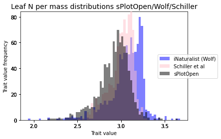
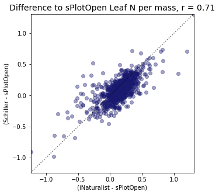


 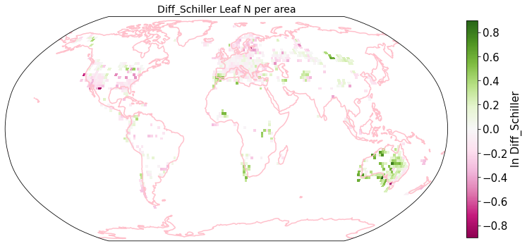
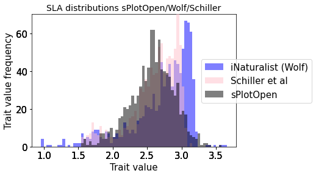
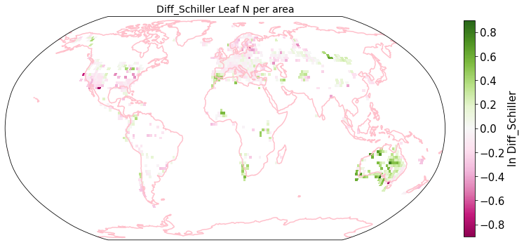
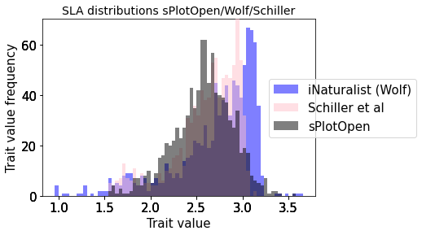
 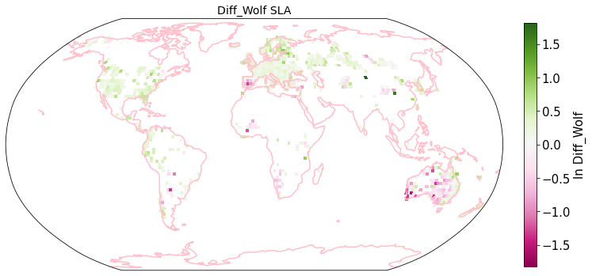
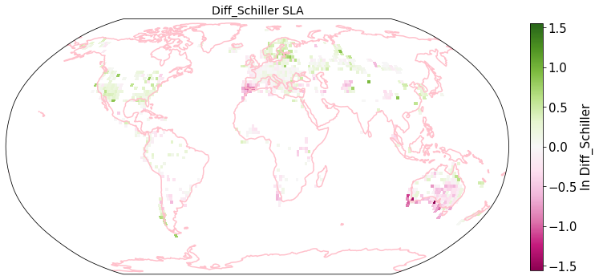
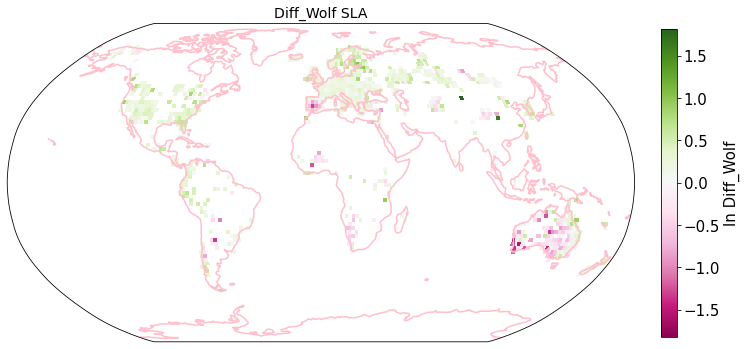
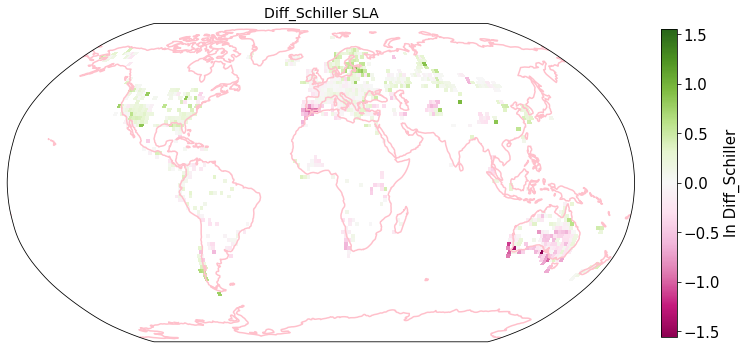
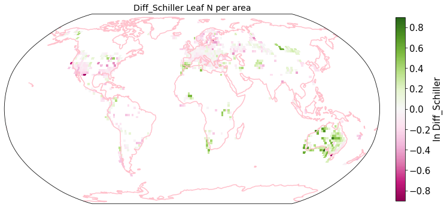
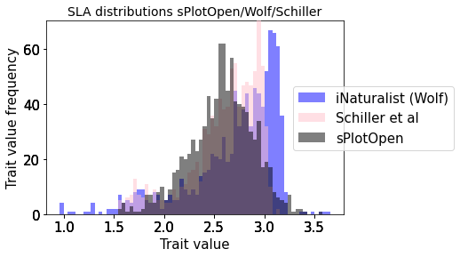
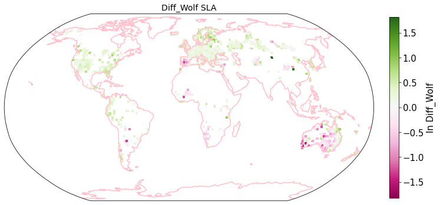
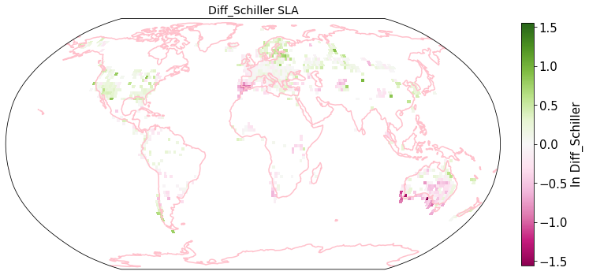
Compare Schiller and Wolf maps#
Load iNaturalist maps from geotiff#
from os import listdir
from os.path import isfile, join
path = "./iNaturalist_traits-main/iNat_log/"
files = [f for f in listdir(path) if isfile(join(path, f))]
files.sort()
files
['iNat_Conduit.element.length_2_ln.tif',
'iNat_Dispersal.unit.length_2_ln.tif',
'iNat_LDMC_2_ln.tif',
'iNat_Leaf.Area_2_ln.tif',
'iNat_Leaf.C_2_ln.tif',
'iNat_Leaf.N.P.ratio_2_ln.tif',
'iNat_Leaf.N.per.area_2_ln.tif',
'iNat_Leaf.N.per.mass_2_ln.tif',
'iNat_Leaf.P_2_ln.tif',
'iNat_Leaf.delta15N_2_ln.tif',
'iNat_Leaf.fresh.mass_2_ln.tif',
'iNat_Plant.Height_2_ln.tif',
'iNat_SLA_2_ln.tif',
'iNat_SSD_2_ln.tif',
'iNat_Seed.length_2_ln.tif',
'iNat_Seed.mass_2_ln.tif',
'iNat_Seeds.per.rep..unit_2_ln.tif',
'iNat_Stem.conduit.density_2_ln.tif']
def cubeFile(file):
name = file.replace(".tif","")
sr = xr.open_dataset(path + file,engine = "rasterio",chunks = 1024).sel(band = 1)
sr = sr.assign_coords({"variable":name})
return sr
da_2 = xr.concat([cubeFile(x) for x in files],dim = "variable")
da_2
<xarray.Dataset>
Dimensions: (x: 180, y: 90, variable: 18)
Coordinates:
band int64 1
* x (x) float64 -179.0 -177.0 -175.0 -173.0 ... 175.0 177.0 179.0
* y (y) float64 89.0 87.0 85.0 83.0 ... -83.0 -85.0 -87.0 -89.0
spatial_ref int64 0
* variable (variable) <U32 'iNat_Conduit.element.length_2_ln' ... 'iNat...
Data variables:
band_data (variable, y, x) float32 dask.array<chunksize=(1, 90, 180), meta=np.ndarray>da_2.band_data.sel(variable = "iNat_Leaf.Area_2_ln").plot.imshow()
<matplotlib.image.AxesImage at 0x7f05e93c9730>
df = da_2.band_data.to_dataset().to_dataframe().reset_index()
df_spread = df.pivot(index= ['x','y'],columns='variable',values='band_data').reset_index()
df_spread.head()
| variable | x | y | iNat_Conduit.element.length_2_ln | iNat_Dispersal.unit.length_2_ln | iNat_LDMC_2_ln | iNat_Leaf.Area_2_ln | iNat_Leaf.C_2_ln | iNat_Leaf.N.P.ratio_2_ln | iNat_Leaf.N.per.area_2_ln | iNat_Leaf.N.per.mass_2_ln | iNat_Leaf.P_2_ln | iNat_Leaf.delta15N_2_ln | iNat_Leaf.fresh.mass_2_ln | iNat_Plant.Height_2_ln | iNat_SLA_2_ln | iNat_SSD_2_ln | iNat_Seed.length_2_ln | iNat_Seed.mass_2_ln | iNat_Seeds.per.rep..unit_2_ln | iNat_Stem.conduit.density_2_ln |
|---|---|---|---|---|---|---|---|---|---|---|---|---|---|---|---|---|---|---|---|---|
| 0 | -179.0 | -89.0 | NaN | NaN | NaN | NaN | NaN | NaN | NaN | NaN | NaN | NaN | NaN | NaN | NaN | NaN | NaN | NaN | NaN | NaN |
| 1 | -179.0 | -87.0 | NaN | NaN | NaN | NaN | NaN | NaN | NaN | NaN | NaN | NaN | NaN | NaN | NaN | NaN | NaN | NaN | NaN | NaN |
| 2 | -179.0 | -85.0 | NaN | NaN | NaN | NaN | NaN | NaN | NaN | NaN | NaN | NaN | NaN | NaN | NaN | NaN | NaN | NaN | NaN | NaN |
| 3 | -179.0 | -83.0 | NaN | NaN | NaN | NaN | NaN | NaN | NaN | NaN | NaN | NaN | NaN | NaN | NaN | NaN | NaN | NaN | NaN | NaN |
| 4 | -179.0 | -81.0 | NaN | NaN | NaN | NaN | NaN | NaN | NaN | NaN | NaN | NaN | NaN | NaN | NaN | NaN | NaN | NaN | NaN | NaN |
Plot differences of Wolf and Schiller maps#
other_trait = ['other_nit_2deg', 'other_nita_2deg', 'other_sla_2deg']
trait = ['iNat_Leaf.N.per.mass_2_ln', 'iNat_Leaf.N.per.area_2_ln', 'iNat_SLA_2_ln']
label = ['Leaf N per mass', 'Leaf N per area', 'SLA']
deg = 2
for b in [6]:
for t in [0,1,2]:
b = 4
if t==2:
b=6
# published data
schiller = da.sel(band = b).band_data.sel(variable = other_trait[t]).to_dataset().to_dataframe().reset_index()
schiller['variable'] = trait[t]
schiller['band_data'] = np.log(schiller['band_data'])
wolf = da_2.band_data.sel(variable = trait[t]).to_dataframe().reset_index()
raster_means_trait = pd.merge(wolf, schiller, on = ["variable", "x", "y"])
# difference maps
raster_means_trait["Diff (Wolf - Schiller)"] = raster_means_trait["band_data_x"] - raster_means_trait["band_data_y"]
# drop nan's
raster_means_trait = raster_means_trait.dropna()
# plot differences against eachother
# get correlation
# open saved raster mean files
filename="grid_means_" + str(2) + "_deg.csv"
raster_means = pd.read_csv(filename)
raster_means = raster_means[~raster_means.isin([np.nan, np.inf, -np.inf]).any(1)]
# determine weights per grid cell based on longitude
lat_unique = raster_means['y_bin'].unique()
weights = lat_weights(lat_unique, deg=2)
r2_trait = weighted_r(raster_means_trait, "band_data_x", "band_data_y", "y", weights)
fig = plt.figure(figsize=(5, 5))
ax = plt.scatter(raster_means_trait["band_data_x"], raster_means_trait["band_data_y"],
alpha = 0.4, color="midnightblue")
plt.axline([0,0], [1,1], color= "black", alpha=0.6, ls = ":")
xlim1 = min(raster_means_trait["band_data_x"])
xlim2 = max(raster_means_trait["band_data_x"])
if xlim1>min(raster_means_trait["band_data_y"]):
xlim1 = min(raster_means_trait["band_data_y"])
if xlim2<max(raster_means_trait["band_data_y"]):
xlim2 = max(raster_means_trait["band_data_y"])
plt.xlim(xlim1,xlim2)
plt.ylim(xlim1,xlim2)
plt.title(label=label[t]+ ", r = " + str(round(r2_trait,2)),fontsize=14,color="black")
plt.xlabel('Wolf et al pixel')
plt.ylabel('Schiller et al pixel')
filename = "../Figures/" + other_trait[t] + "_corr_schiller_wolf.pdf"
plt.savefig(filename, bbox_inches='tight')
fig = plt.figure(figsize=(12, 12))
plot_grid(raster_means_trait, 'x', 'y', 'Diff (Wolf - Schiller)', label[t], deg=deg, log=True)
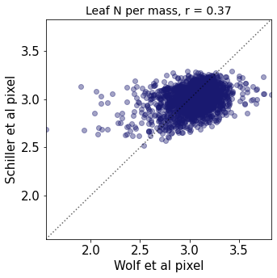

 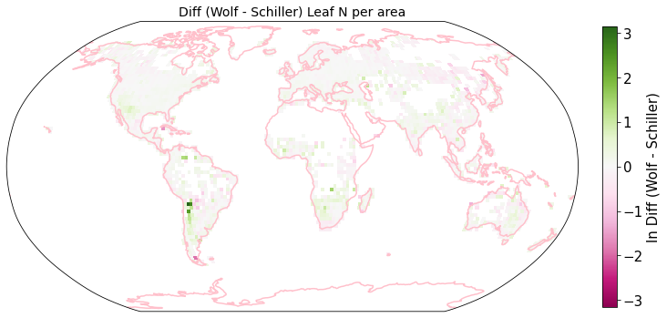
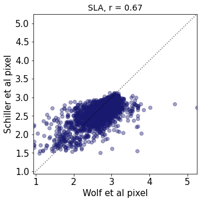
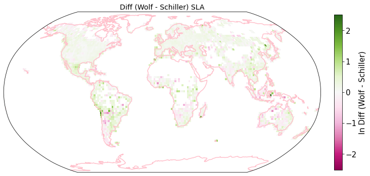
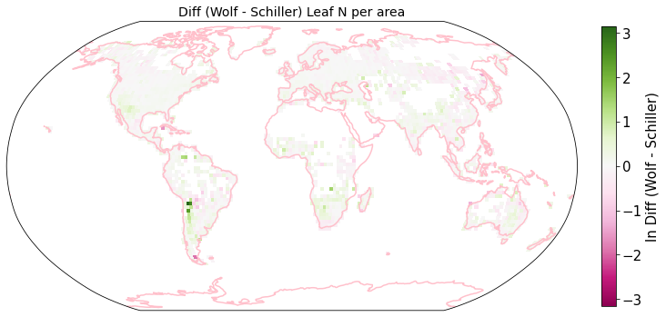
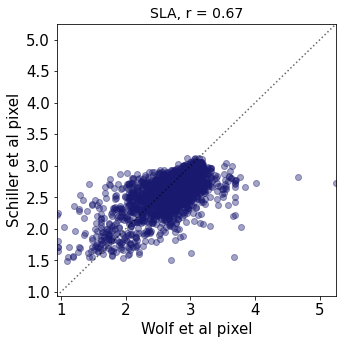
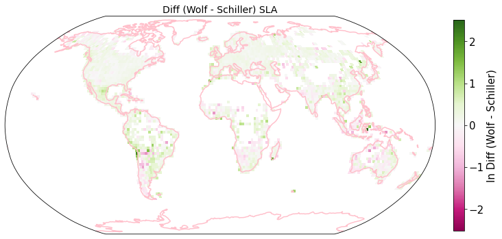
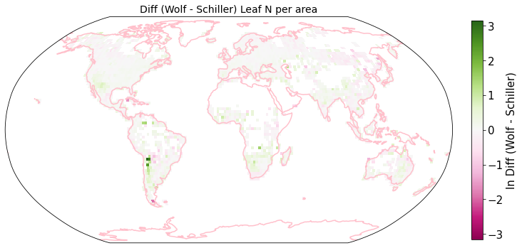
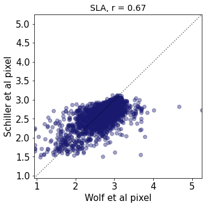
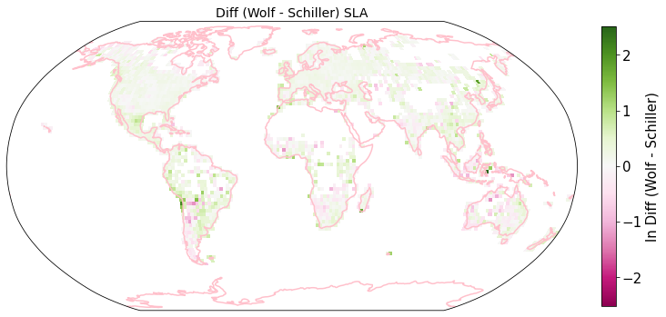